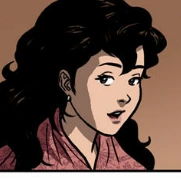

| CHARACTERS IN NOLI ME TANGERE |
 |
Juan Crisóstomo Ibarra y Magsalin (Ibarra) |
- A rich young mestizo who has just returned to the Philippines after seven years of studying in Europe
- Ibarra is intelligent, highly respected, and very idealistic
|
|  |
María Clara |
- A high social standing woman who is thought to be the daughter of Kapitan Tiago and Padre Dámaso's goddaughter
- She is actually the biological daughter of Father Dámaso, the result of a scandalous relationship with Kapitan Tiago's wife
|
 |
Padre Dámaso |
- An old, power-hungry, and shamelessly corrupt Spanish priest who has lived among the native Filipinos for nearly two decades
- He spent all that time among the native filipinos for years but they have done nothing to endear him or develop any sympathy in him for his "flock"
- He is also the godfather (and, in fact, the biological father) of María Clara, giving him influence over her relationship with Ibarra
|
 |
Padre Salví |
- A younger Spanish priest who takes control over Padre Damaso's post as friar curate of San Diego
- In many ways, he is more dangerous that his precursor since he is a more gifted strategist who uses his religious role for political influence as well as personal vendettas
|
 |
Don Rafael Ibarra |
- Crisóstomo Ibarra's father
- A critic of the corrupt practices of the Spanish friars
- He dies in prison before his name can be cleared and his remains are buried in the Catholic cemetery in the town of San Diego, but Padre Dámaso hires a gravedigger to dig up his body to bury him at the Chinese cemetery because of his status as a heretic
|